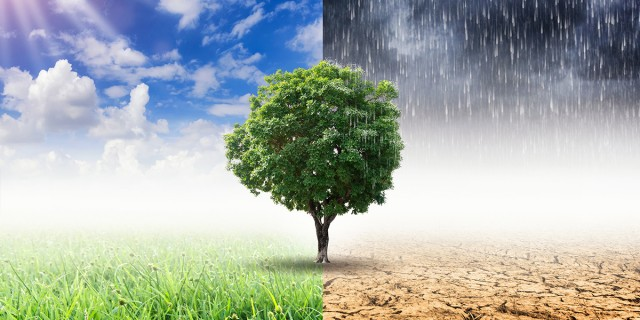

À Propos
L'équipe :
- Cirade Adrien - Bopp Alexandre - Moreaux Hugo - Bourguignon Roman - Azoulay Samuel - Thomassin Steven


Le projet :
Le projet vise à créer une application ludique permettant au grand public de distinguer entre fausses informations et solutions réelles pour le climat. Face aux défis du changement climatique, l'objectif est de fournir des informations claires, basées sur des données chiffrées et des sources fiables. Porté par le Réseau Action Climat et le Bureau de la Nuit de l'Info 2023, cette application vise à sensibiliser et éduquer un public sans connaissances préalables sur le sujet et de montrer que des actions positives sont à notre portée.